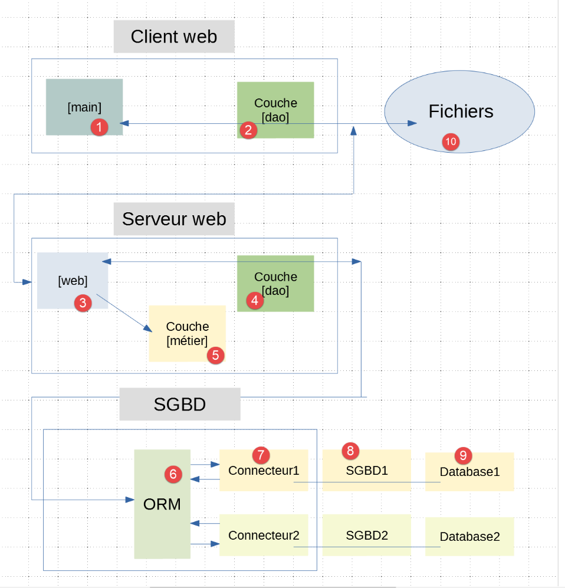
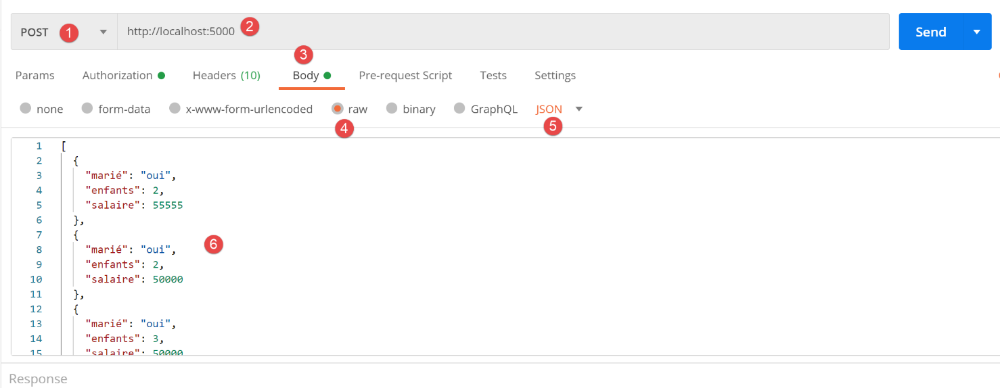

28. Exercice d’application : version 10
28.1. Introduction
Dans les exemples de clients du serveur de calcul de l’impôt, les threads envoyaient N requêtes séquentiellement si elles devaient traiter N contribuables. L’idée ici est d’envoyer une seule requête encapsulant les N contribuables. Pour chacun d’entre-eux, il faut envoyer les informations [marié, enfants, salaire]. On peut les envoyer comme paramètres :
- de l’URL. On aura alors une longue URL peu significative ;
- dans le corps (body) de la requête HTTP. On sait que ce corps est caché à l’utilisateur utilisant un navigateur ;
Dans les deux cas, on peut utiliser une requête [GET] ou [POST]. Nous utiliserons une requête POST avec les paramètres encapsulés dans le corps de la requête HTTP.
L’architecture client / serveur n’a pas changé :

28.2. Le serveur web

Le dossier [http-servers/05] est obtenu initialement par recopie du dossier [http-servers/02]. On revient aux échanges jSON entre le client et le serveur. On a vu que passer du jSON au XML est très simple.
28.2.1. Configuration
La configuration [config, config_database, config_layers] reste analogue à celle des versions précédentes. Nous ne revenons pas dessus.
28.2.2. Le script principal [main]
Le script [main] est identique à celui du dossier [http-servers/02] qu’on a recopié. Une seule chose diffère :
# Home URL
@app.route('/', methods=['POST'])
@auth.login_required
def index():
…
- ligne 2 : désormais l’URL / s’obtient via un POST ;
28.2.3. Le contrôleur [index_controller]
Le contrôleur [index_controller] évolue de la façon suivante :
# import des dépendances
import json
from flask_api import status
from werkzeug.local import LocalProxy
def execute(request: LocalProxy, config: dict) -> tuple:
# dépendances
from ImpôtsError import ImpôtsError
from TaxPayer import TaxPayer
# on récupère le corps du post - on attend une liste de dictionnaires
msg_erreur = None
list_dict_taxpayers = None
# le corps jSON du POST
request_text = request.data
try:
# qu'on transforme en une liste de dictionnaires
list_dict_taxpayers = json.loads(request_text)
except BaseException as erreur:
# on note l'erreur
msg_erreur = f"le corps du POST n'est pas une chaîne jSON valide : {erreur}"
# a-t-on une liste non vide ?
if not msg_erreur and (not isinstance(list_dict_taxpayers, list) or len(list_dict_taxpayers) == 0):
# on note l'erreur
msg_erreur = "le corps du POST n'est pas une liste ou alors cette liste est vide"
# a-t-on une liste de dictionnaires ?
if not msg_erreur:
erreur = False
i = 0
while not erreur and i < len(list_dict_taxpayers):
erreur = not isinstance(list_dict_taxpayers[i], dict)
i += 1
# erreur ?
if erreur:
msg_erreur = "le corps du POST doit être une liste de dictionnaires"
# erreur ?
if msg_erreur:
# on envoie une réponse d'erreur au client
résultats = {"réponse": {"erreurs": [msg_erreur]}}
return résultats, status.HTTP_400_BAD_REQUEST
# on vérifie les TaxPayers un par un
# au départ pas d'erreurs
list_erreurs = []
for dict_taxpayer in list_dict_taxpayers:
# on crée un TaxPayer à partir de dict_taxpayer
msg_erreur = None
try:
# l'opération suivante va éliminer les cas où les paramètres ne sont pas
# des propriétés de la classe TaxPayer ainsi que les cas où leurs valeurs
# sont incorrectes
TaxPayer().fromdict(dict_taxpayer)
except BaseException as erreur:
msg_erreur = f"{erreur}"
# certaines clés doivent être présentes dans le dictionnaire
if not msg_erreur:
# les clés [marié, enfants, salaire] doivent être présentes dans le dictionnaire
keys = dict_taxpayer.keys()
if 'marié' not in keys or 'enfants' not in keys or 'salaire' not in keys:
msg_erreur = "le dictionnaire doit inclure les clés [marié, enfants, salaire]"
# des erreurs ?
if msg_erreur:
# on note l'erreur dans le TaxPayer lui-même
dict_taxpayer['erreur'] = msg_erreur
# on ajoute le TaxPayer à la liste des erreurs
list_erreurs.append(dict_taxpayer)
# on a traité tous les taxpayers - y-a-t-il des erreurs ?
if list_erreurs:
# on envoie une réponse d'erreur au client
résultats = {"réponse": {"erreurs": list_erreurs}}
return résultats, status.HTTP_400_BAD_REQUEST
# pas d'erreurs, on peut travailler
# récupération des données de l'administration fiscale
admindata = config["admindata"]
métier = config["layers"]["métier"]
try:
# on traite les TaxPayer un à un
list_taxpayers = []
for dict_taxpayer in list_dict_taxpayers:
# calcul de l'impôt
taxpayer = TaxPayer().fromdict(
{'marié': dict_taxpayer['marié'], 'enfants': dict_taxpayer['enfants'],
'salaire': dict_taxpayer['salaire']})
métier.calculate_tax(taxpayer, admindata)
# on mémorise le résultat en tant que dictionnaire
list_taxpayers.append(taxpayer.asdict())
# on envoie la réponse au client
return {"réponse": {"results": list_taxpayers}}, status.HTTP_200_OK
except ImpôtsError as erreur:
# on envoie une réponse d'erreur au client
return {"réponse": {"erreurs": f"[{erreur}]"}}, status.HTTP_500_INTERNAL_SERVER_ERROR
- ligne 9 : le contrôleur reçoit :
- la requête [request] du client ;
- la configuration [config] du serveur ;
- lignes 14-18 : on récupère le corps du POST. Les paramètres encapsulés dans le corps de la requête HTTP peuvent être encodés de différentes façons. Nous en avons déjà rencontré une : [x-www-form-urlencoded]. Nous allons ici utiliser un autre encodage : jSON ;
- ligne 18 : [request.data] permet de récupérer le corps (body) de la requête HTTP. On récupère ici du texte et nous savons que ce texte est du jSON qui représente une liste de dictionnaire [marié, enfants, salaire] ;
- lignes 19-24 : on récupère cette liste de dictionnaires ;
- lignes 22-24 : si la récupération du jSON s’est mal passée, on note l’erreur ;
- lignes 26-28 : si on découvre que l’objet récupéré n’est pas une liste ou que c’est une liste vode, on note l’erreur ;
- lignes 29-38 : si on a bien récupéré une liste, on vérifie que c’est bien une liste de dictionnaires ;
- lignes 40-43 : s’il y a eu erreur, on s’arrête là et on envoie une réponse d’erreur au client ;
- lignes 45-69 : on vérifie maintenant chacun des dictionnaires :
- ils doivent contenir les clés [marié, enfants, salaire] ;
- ils doivent permettre de construire un objet [TaxPayer] valide ;
- lignes 65-69 : si une erreur a été détectée dans un dictionnaire, alors elle est mise dans ce même dictionnaire associée à la clé ‘erreur’ ;
- lignes 72-75 : les dictionnaires erronés ont été cumulés dans la liste [list_erreurs]. Si cette liste n’est pas vide, alors on l’envoie dans une réponse d’erreur faite au client ;
- ligne 77 : arrivé là, on sait qu’on peut créer une liste d’objets de type [TaxPayer] à partir du corps de la requête envoyée par le client ;
- lignes 84-91 : on exploite la liste des dictionnaires reçus ;
- ligne 86 : à partir d’un dictionnaire, on crée un objet [TaxPayer] ;
- ligne 89 : on calcule l’impôt de ce [TaxPayer] ;
- ligne 91 : on sait que [taxpayer] a été modifié par le calcul de l’impôt. On le transforme en dictionnaire et on l’ajoute à une liste de résultats ;
- ligne 93 : on envoie cette liste de résultats au client ;
28.2.4. Tests du serveur
Nous allons tester le serveur avec un client Postman :
- nous lançons le serveur web, le SGBD, le serveur de mails [hMailServer] ;
- nous lançons le client Postman ainsi que sa console (Ctrl-Alt-C) ;

- en [1] : on émet une requête [POST] ;
- en [2] : l’URL du serveur ;
- en [3] : le corps de la requête HTTP ;
- en [5] : on indique que ce corps devra être envoyé sous la forme d’une chaîne jSON ;
- en [4] : on se met en mode [raw] pour pouvoir copier / coller une chaîne jSON ;
- en [6] : on colle la chaîne jSON prise dans un des fichiers [résultats.json] des différentes versions. Puis on ne garde pour chaque contribuable que les propriétés [marié, salaire, enfants] ;

- en [7], on regarde les entêtes HTTP que va envoyer le client Postman au serveur ;
- en [8], on voit qu’il va lui envoyer un entête [Content-Type] lui indiquant que la requête contient un corps codé en jSON. Cela vient du choix [5] fait précédemment ;

- en [9-12] : on met dans la requête les identifiants attendus par le serveur ;
On envoie cette requête. La réponse du serveur est la suivante :

- en [3], on a reçu du jSON ;
- en [4], l’impôt des contribuables ;
Examinons dans la console Postman (Ctrl-Alt-C) le dialogue client / serveur qui a eu lieu :
Le client Postman a envoyé le texte suivant :
POST / HTTP/1.1
Authorization: Basic YWRtaW46YWRtaW4=
Content-Type: application/json
User-Agent: PostmanRuntime/7.26.2
Accept: */*
Cache-Control: no-cache
Postman-Token: 03c4aa28-5a5d-4bb5-ac51-7ad51968c71d
Host: localhost:5000
Accept-Encoding: gzip, deflate, br
Connection: keep-alive
Content-Length: 824
[
{
"marié": "oui",
"enfants": 2,
"salaire": 55555
},
{
"marié": "oui",
"enfants": 2,
"salaire": 50000
},
{
"marié": "oui",
"enfants": 3,
"salaire": 50000
},
{
"marié": "non",
"enfants": 2,
"salaire": 100000
},
{
"marié": "non",
"enfants": 3,
"salaire": 100000
},
{
"marié": "oui",
"enfants": 3,
"salaire": 100000
},
{
"marié": "oui",
"enfants": 5,
"salaire": 100000
},
{
"marié": "non",
"enfants": 0,
"salaire": 100000
},
{
"marié": "oui",
"enfants": 2,
"salaire": 30000
},
{
"marié": "non",
"enfants": 0,
"salaire": 200000
},
{
"marié": "oui",
"enfants": 3,
"salaire": 200000
}
]
- ligne 1 : le POST vers le serveur ;
- ligne 2 : l’entête HTTP d’authentification ;
- ligne 3 : le client dit au serveur qu’il lui envoie une chaîne jSON et que cette chaîne fait 824 octets (ligne 11) ;
- lignes 13-69 : le corps jSON de la requête ;
Le serveur lui a répondu le texte suivant :
HTTP/1.0 200 OK
Content-Type: application/json; charset=utf-8
Content-Length: 1461
Server: Werkzeug/1.0.1 Python/3.8.1
Date: Tue, 28 Jul 2020 07:16:34 GMT
{"réponse": {"results": [{"marié": "oui", "enfants": 2, "salaire": 55555, "impôt": 2814, "surcôte": 0, "taux": 0.14, "décôte": 0, "réduction": 0}, {"marié": "oui", "enfants": 2, "salaire": 50000, "impôt": 1384, "surcôte": 0, "taux": 0.14, "décôte": 384, "réduction": 347}, {"marié": "oui", "enfants": 3, "salaire": 50000, "impôt": 0, "surcôte": 0, "taux": 0.14, "décôte": 720, "réduction": 0}, {"marié": "non", "enfants": 2, "salaire": 100000, "impôt": 19884, "surcôte": 4480, "taux": 0.41, "décôte": 0, "réduction": 0}, {"marié": "non", "enfants": 3, "salaire": 100000, "impôt": 16782, "surcôte": 7176, "taux": 0.41, "décôte": 0, "réduction": 0}, {"marié": "oui", "enfants": 3, "salaire": 100000, "impôt": 9200, "surcôte": 2180, "taux": 0.3, "décôte": 0, "réduction": 0}, {"marié": "oui", "enfants": 5, "salaire": 100000, "impôt": 4230, "surcôte": 0, "taux": 0.14, "décôte": 0, "réduction": 0}, {"marié": "non", "enfants": 0, "salaire": 100000, "impôt": 22986, "surcôte": 0, "taux": 0.41, "décôte": 0, "réduction": 0}, {"marié": "oui", "enfants": 2, "salaire": 30000, "impôt": 0, "surcôte": 0, "taux": 0.0, "décôte": 0, "réduction": 0}, {"marié": "non", "enfants": 0, "salaire": 200000, "impôt": 64210, "surcôte": 7498, "taux": 0.45, "décôte": 0, "réduction": 0}, {"marié": "oui", "enfants": 3, "salaire": 200000, "impôt": 42842, "surcôte": 17283, "taux": 0.41, "décôte": 0, "réduction": 0}]}}
- ligne 1 : la requête a réussi ;
- ligne 2 : le corps de la réponse du serveur est une chaîne jSON. Celle-ci fait 1461 octets (ligne 3) ;
- ligne 7 : la réponse jSON du serveur ;
Testons maintenant des cas d’erreur.
Cas 1 : on envoie n’importe quoi
POST / HTTP/1.1
Authorization: Basic YWRtaW46YWRtaW4=
Content-Type: application/json
User-Agent: PostmanRuntime/7.26.2
Accept: */*
Cache-Control: no-cache
Postman-Token: 47652706-9744-46a0-a682-de010e5406c0
Host: localhost:5000
Accept-Encoding: gzip, deflate, br
Connection: keep-alive
Content-Length: 3
abc
HTTP/1.0 400 BAD REQUEST
Content-Type: application/json; charset=utf-8
Content-Length: 125
Server: Werkzeug/1.0.1 Python/3.8.1
Date: Tue, 28 Jul 2020 07:43:27 GMT
{"réponse": {"erreurs": ["le corps du POST n'est pas une chaîne jSON valide : Expecting value: line 1 column 1 (char 0)"]}}
- ligne 13 : on a envoyé la chaîne [abc] qui n’est pas une chaîne jSON valide (ligne 3) ;
- ligne 15 : le serveur répond par un code d’erreur 400 ;
- ligne 21 : la réponse jSON du serveur ;
Cas 2 : envoyons une chaîne jSON valide qui ne soit pas une liste
POST / HTTP/1.1
Authorization: Basic YWRtaW46YWRtaW4=
Content-Type: application/json
User-Agent: PostmanRuntime/7.26.2
Accept: */*
Cache-Control: no-cache
Postman-Token: 03b64735-9239-47b3-b92d-be7c9ebc7559
Host: localhost:5000
Accept-Encoding: gzip, deflate, br
Connection: keep-alive
Content-Length: 17
{"att1":"value1"}
HTTP/1.0 400 BAD REQUEST
Content-Type: application/json; charset=utf-8
Content-Length: 97
Server: Werkzeug/1.0.1 Python/3.8.1
Date: Tue, 28 Jul 2020 07:50:11 GMT
{"réponse": {"erreurs": ["le corps du POST n'est pas une liste ou alors cette liste est vide"]}}
Cas 3 : envoyons une chaîne jSON qui soit une liste dont les éléments ne sont pas tous des dictionnaires
POST / HTTP/1.1
Authorization: Basic YWRtaW46YWRtaW4=
Content-Type: application/json
User-Agent: PostmanRuntime/7.26.2
Accept: */*
Cache-Control: no-cache
Postman-Token: a1528a5f-777c-413f-b3be-7d4e9955b12a
Host: localhost:5000
Accept-Encoding: gzip, deflate, br
Connection: keep-alive
Content-Length: 7
[0,1,2]
HTTP/1.0 400 BAD REQUEST
Content-Type: application/json; charset=utf-8
Content-Length: 85
Server: Werkzeug/1.0.1 Python/3.8.1
Date: Tue, 28 Jul 2020 07:52:10 GMT
{"réponse": {"erreurs": ["le corps du POST doit être une liste de dictionnaires"]}}
Cas 4 : envoyons une liste de dictionnaires avec un dictionnaire n’ayant pas les bonnes clés
POST / HTTP/1.1
Authorization: Basic YWRtaW46YWRtaW4=
Content-Type: application/json
User-Agent: PostmanRuntime/7.26.2
Accept: */*
Cache-Control: no-cache
Postman-Token: ba964d81-c9d9-46ff-a521-b4c4e5639484
Host: localhost:5000
Accept-Encoding: gzip, deflate, br
Connection: keep-alive
Content-Length: 19
[{"att1":"value1"}]
HTTP/1.0 400 BAD REQUEST
Content-Type: application/json; charset=utf-8
Content-Length: 112
Server: Werkzeug/1.0.1 Python/3.8.1
Date: Tue, 28 Jul 2020 07:54:33 GMT
{"réponse": {"erreurs": [{"att1": "value1", "erreur": "MyException[2, la clé [att1] n'est pas autorisée]"}]}}
Cas 5 : envoyons une liste de dictionnaires avec un dictionnaire avec des clés manquantes :
POST / HTTP/1.1
Authorization: Basic YWRtaW46YWRtaW4=
Content-Type: application/json
User-Agent: PostmanRuntime/7.26.2
Accept: */*
Cache-Control: no-cache
Postman-Token: 98aec51d-f37d-4c14-81cd-c7ffcbbcdc65
Host: localhost:5000
Accept-Encoding: gzip, deflate, br
Connection: keep-alive
Content-Length: 18
[{"marié":"oui"}]
HTTP/1.0 400 BAD REQUEST
Content-Type: application/json; charset=utf-8
Content-Length: 125
Server: Werkzeug/1.0.1 Python/3.8.1
Date: Tue, 28 Jul 2020 07:56:40 GMT
{"réponse": {"erreurs": [{"marié": "oui", "erreur": "le dictionnaire doit inclure les clés [marié, enfants, salaire]"}]}}
Cas 6 : envoyons une liste de dictionnaires avec un dictionnaire ayant les bonnes clés mais certaines ayant des valeurs erronées :
POST / HTTP/1.1
Authorization: Basic YWRtaW46YWRtaW4=
Content-Type: application/json
User-Agent: PostmanRuntime/7.26.2
Accept: */*
Cache-Control: no-cache
Postman-Token: 3083e601-dee4-4e15-9ea4-fc0328d0fcf0
Host: localhost:5000
Accept-Encoding: gzip, deflate, br
Connection: keep-alive
Content-Length: 46
[{"marié":"x", "enfants":"x", "salaire":"x"}]
HTTP/1.0 400 BAD REQUEST
Content-Type: application/json; charset=utf-8
Content-Length: 167
Server: Werkzeug/1.0.1 Python/3.8.1
Date: Tue, 28 Jul 2020 07:59:32 GMT
{"réponse": {"erreurs": [{"marié": "x", "enfants": "x", "salaire": "x", "erreur": "MyException[31, l'attribut marié [x] doit avoir l'une des valeurs oui / non]"}]}}
28.3. Le client web

Le dossier [http-clients/05] (version 10) est obtenu initialement par recopie du dossier [http-clients/02] (version 7). Il est ensuite modifié.
28.3.1. La couche [dao]
La couche [dao] est implémentée par la classe [ImpôtsDaoWithHttpClient] suivante :
# imports
import requests
from flask_api import status
from AbstractImpôtsDao import AbstractImpôtsDao
from AdminData import AdminData
from ImpôtsError import ImpôtsError
from InterfaceImpôtsMétier import InterfaceImpôtsMétier
from TaxPayer import TaxPayer
class ImpôtsDaoWithHttpClient(AbstractImpôtsDao, InterfaceImpôtsMétier):
# constructeur
def __init__(self, config: dict):
…
# méthode inutilisée
def get_admindata(self) -> AdminData:
pass
# calcul de l'impôt
def calculate_tax(self, taxpayer: TaxPayer, admindata: AdminData = None):
…
# calcul de l'impôt en mode bulk
def calculate_tax_in_bulk_mode(self, taxpayers: list) -> list:
# on laisse remonter les exceptions
# on transforme les taxpayers en liste de dictionnaires
# on ne garde que les propriétés [marié, enfants, salaire]
list_dict_taxpayers = list(
map(lambda taxpayer:
taxpayer.asdict(included_keys=[
'_TaxPayer__marié',
'_TaxPayer__enfants',
'_TaxPayer__salaire']),
taxpayers))
# connexion au serveur
config_server = self.__config_server
if config_server['authBasic']:
response = requests.post(config_server['urlServer'], json=list_dict_taxpayers,
auth=(config_server["user"]["login"],
config_server["user"]["password"]))
else:
response = requests.post(config_server['urlServer'], json=list_dict_taxpayers)
# mode debug ?
if self.__debug:
# logueur
if not self.__logger:
self.__logger = self.__config['logger']
# on logue
self.__logger.write(f"{response.text}\n")
# code de statut de la réponse HTTP
status_code = response.status_code
# on met la réponse jSON dans un dictionnaire
résultat = response.json()
# erreur si code de statut différent de 200 OK
if status_code != status.HTTP_200_OK:
# on sait que les erreurs ont été associées à la clé [erreurs] de la réponse
raise ImpôtsError(93, résultat['réponse']['erreurs'])
# on sait que le résultat a été associé à la clé [results] de la réponse
list_dict_taxpayers2 = résultat['réponse']['results']
# on met à jour la liste initiale des taxpayers avec les résultats reçus
for i in range(len(taxpayers)):
# mise à jour de taxpayers[i]
taxpayers[i].fromdict(list_dict_taxpayers2[i])
# ici le paramètre [taxpayers] a été mis à jour avec les résultats du serveur
- lignes 1-26 : le code reste ce qu’il était dans la version 7 et dans d’autres versions ;
- lignes 27-70 : on introduit une nouvelle méthode [calculate_tax_in_bulk_mode] dont le rôle est de calculer l’impôt d’une liste de contribuables ;
- ligne 28 : [taxpayers] est cette liste de contribuables ;
- lignes 31-39 : on passe d’une liste d’objets de type [TaxPayer] à une liste de dictionnaires grâce à une fonction [map] ;
- lignes 34-38 : la fonction lambda utilisée transforme un objet de type [TaxPayer] en un dictionnaire de type [dict] ayant les seules clés [marié, enfants, salaire]. On utilise pour cela le paramètre nommé [included_keys] de la méthode [BaseEntity.asdict]. On rappelle que pour connaître les noms exacts des propriétés à mettre dans les paramètres [excluded_keys, included_keys], il faut utiliser le dictionnaire prédéfini [taxpayer.__dict__] ;
- lignes 41-48 : connexion au serveur puis obtention de sa réponse HTTP ;
- lignes 44, 48 :
- on utilise la méthode statique [requests.post] pour faire un POST vers le serveur ;
- on utilise le paramètre nommé [json] pour indiquer que le corps du POST est une chaîne jSON. Cela va avoir deux conséquences :
- l’objet affecté au paramètre nommé [json], ici une liste de dictionnaires, va être transformé en chaîne jSON ;
- l’entête
sera inclus dans les entêtes HTTP du POST ;
- ligne 59 : la réponse jSON du serveur est désérialisée dans le dictionnaire [résultat] ;
- lignes 61-63 : on gère l’éventuelle erreur envoyée par le serveur ;
- ligne 65 : les résultats du calcul de l’impôt sont dans une liste de dictionnaires ;
- lignes 67-69 : ces résultats sont exploités pour mettre à jour la liste initiale des contribuables [taxpayers] initialement reçus par la méthode, ligne 28 ;
- ligne 70 : ici la liste la liste initiale des contribuables a été mise à jour avec les résultats du calcul de l’impôt ;
28.3.2. Le script principal [main]
Le script principal [main] évolue de la façon suivante : seule la fonction [thread_function] exécutée par les threads créés par le client est modifiée. Le reste du code reste à l’identique.
# exécution de la couche [dao] dans un thread
# taxpayers est une liste de contribuables
def thread_function(dao: ImpôtsDaoWithHttpClient, logger: Logger, taxpayers: list):
# log début du thread
thread_name = threading.current_thread().name
nb_taxpayers = len(taxpayers)
# log
logger.write(f"début du calcul de l'impôt des {nb_taxpayers} contribuables\n")
# on calcule l'impôt des contribuables
dao.calculate_tax_in_bulk_mode(taxpayers)
# log
logger.write(f"fin du calcul de l'impôt des {nb_taxpayers} contribuables\n")
- lignes 9-10 : alors que précédemment on avait une boucle qui passait successivement chacun des contribuables à la méthode [dao.calculate_tax], ici on ne fait qu’un unique appel à la méthode [dao.calculate_tax_in_bulk_mode] à laquelle on passe tous les contribuables ;
28.3.3. Exécution du client
Nous allons comparer les temps d’exécution des versions :
- 7, où chaque contribuable fait l’objet d’une requête HTTP ;
- 10 (celle-ci) où on rassemble des contribuables dans une unique requête HTTP ;
Tout d’abord la version 6. Pour comparer les deux versions, on met la propriété [sleep_time] du serveur à zéro pour qu’il n’y ait pas d’attente forcée des threads. Les logs du client sont les suivants :
2020-07-28 14:20:45.811347, Thread-1 : début du thread [Thread-1] avec 4 contribuable(s)
2020-07-28 14:20:45.811347, Thread-1 : début du calcul de l'impôt de {"id": 1, "marié": "oui", "enfants": 2, "salaire": 55555}
…
2020-07-28 14:20:45.913065, Thread-3 : fin du calcul de l'impôt de {"id": 11, "marié": "oui", "enfants": 3, "salaire": 200000, "impôt": 42842, "surcôte": 17283, "taux": 0.41, "décôte": 0, "réduction": 0}
2020-07-28 14:20:45.913065, Thread-3 : fin du thread [Thread-3]
La durée de l’exécution du client pour calculer l’impôt de 11 contribuables est donc [913065-811347= 101718], ç-à-d environ 102 millisecondes.
Faisons la même chose avec la version 10 (sleep_time du serveur à zéro). Les logs du client sont alors les suivants :
2020-07-28 14:25:31.871428, Thread-1 : début du calcul de l'impôt des 4 contribuables
2020-07-28 14:25:31.873594, Thread-2 : début du calcul de l'impôt des 3 contribuables
2020-07-28 14:25:31.877429, Thread-3 : début du calcul de l'impôt des 3 contribuables
2020-07-28 14:25:31.882855, Thread-4 : début du calcul de l'impôt des 1 contribuables
2020-07-28 14:25:31.930723, Thread-2 : {"réponse": {"results": [{"marié": "non", "enfants": 3, "salaire": 100000, "impôt": 16782, "surcôte": 7176, "taux": 0.41, "décôte": 0, "réduction": 0}, {"marié": "oui", "enfants": 3, "salaire": 100000, "impôt": 9200, "surcôte": 2180, "taux": 0.3, "décôte": 0, "réduction": 0}, {"marié": "oui", "enfants": 5, "salaire": 100000, "impôt": 4230, "surcôte": 0, "taux": 0.14, "décôte": 0, "réduction": 0}]}}
….
2020-07-28 14:25:31.935958, Thread-4 : fin du calcul de l'impôt des 1 contribuables
2020-07-28 14:25:31.935958, Thread-1 : fin du calcul de l'impôt des 4 contribuables
La durée de l’exécution du client pour calculer l’impôt de 11 contribuables est donc [935958-871428= 64530 ns] (ligne 8 – ligne 1), ç-à-d environ 65 millisecondes. Cette nouvelle version 10 amène ainsi un gain de 57 % environ sur la version 7.
28.3.4. Tests de la couche [dao] du client

Le test [TestHttpClientDao] du client de la version 10 est très proche de celui de la version 7 :
import unittest
from Logger import Logger
class TestHttpClientDao(unittest.TestCase):
def test_1(self) -> None:
from TaxPayer import TaxPayer
# {'marié': 'oui', 'enfants': 2, 'salaire': 55555,
# 'impôt': 2814, 'surcôte': 0, 'décôte': 0, 'réduction': 0, 'taux': 0.14}
taxpayer = TaxPayer().fromdict({"marié": "oui", "enfants": 2, "salaire": 55555})
dao.calculate_tax_in_bulk_mode([taxpayer])
# vérification
self.assertAlmostEqual(taxpayer.impôt, 2815, delta=1)
self.assertEqual(taxpayer.décôte, 0)
self.assertEqual(taxpayer.réduction, 0)
self.assertAlmostEqual(taxpayer.taux, 0.14, delta=0.01)
self.assertEqual(taxpayer.surcôte, 0)
…
if __name__ == '__main__':
# on configure l'application
import config
config = config.configure({})
# logger
logger = Logger(config["logsFilename"])
# on le mémorise dans la config
config["logger"] = logger
# on récupère la couche [dao]
dao = config["layers"]["dao"]
# on exécute les méthodes de test
print("tests en cours...")
unittest.main()
- ligne 14 : au lieu d’appeler la méthode [dao.calculate_tax], on appelle la méthode [dao.calculate_tax_in_bulk_mode] à laquelle on passe une liste (présence des crochets) d’un contribuable ;
Tous les tests passent.